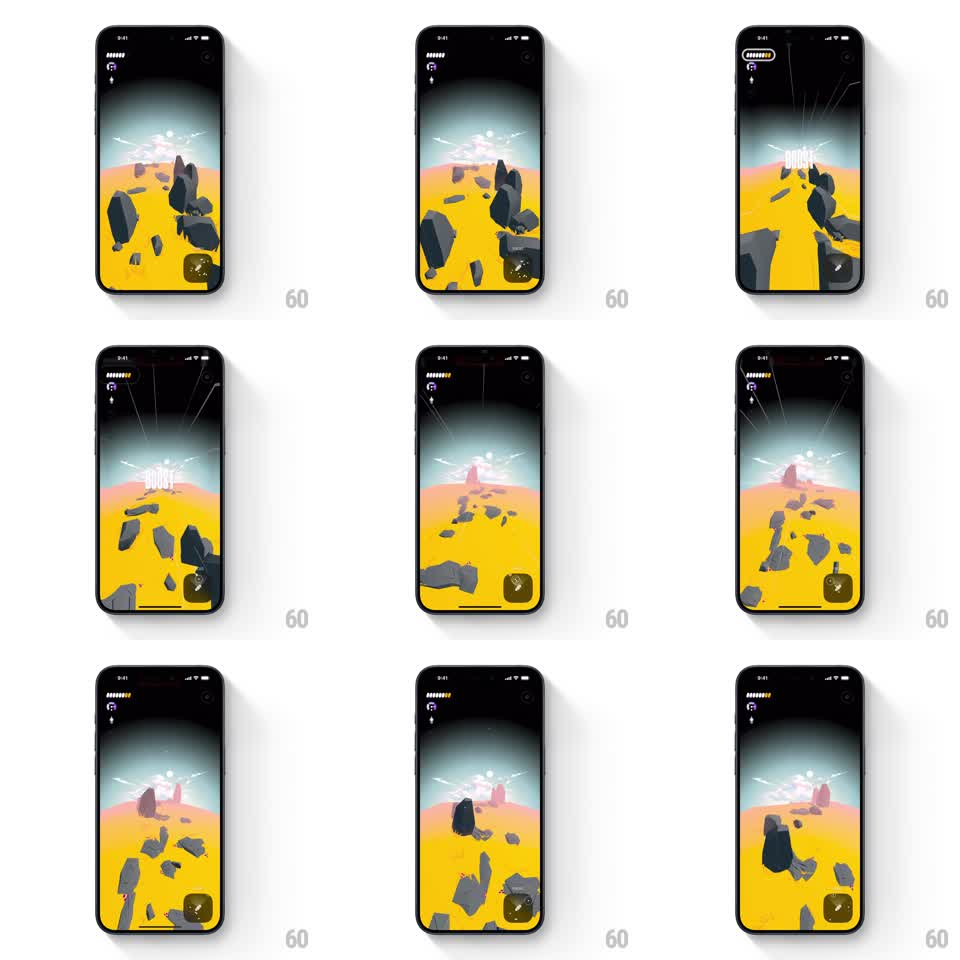

Media
Frame-by-frame

Rebuild this interaction 1:1: Not Boring Vibes' boost - hold the button and the world detonates into speed: "BOOST" type flashes, speed lines radiate, the camera shakes, and the floating-rock landscape accelerates past.

Rebuild this interaction 1:1: Not Boring Vibes' boost - hold the button and the world detonates into speed: "BOOST" type flashes, speed lines radiate, the camera shakes, and the floating-rock landscape accelerates past. ## Integration Integration: stack-agnostic spec - springs given as stiffness/damping, timed motions as duration + curve; map every value to your framework and animation library of choice. ## Scene A stylized 3D landscape: yellow desert with floating black rocks drifting by, a glowing pink-white horizon, dark sky above. HUD: progress pips top-left, a round boost button bottom-right. Boost state: condensed white "BOOST" type center-screen, white speed lines streaking from the top, the horizon flaring. ## Motion spec Pattern: hold-to-boost with camera shake and speed lines. - Touch and hold the boost button: the button depresses and fills (150ms), then the boost engages. - "BOOST" slams in center (scale 1.4 to 1.0, 150ms hard ease-out) and holds while held. - Speed lines: white streaks radiate from the top vanishing point, spawning and streaking down-past the camera (each ~300ms lifetime, continuous spawn). - Camera shake: small fast offset noise (+-4px, ~20Hz) layered on the scene for the duration. - The landscape accelerates: rock and ground scroll speed ramps 2x to 5x over 300ms while held, and the horizon glow flares brighter (opacity +40%). - Release: type fades (150ms), lines stop spawning and die out, scroll speed eases back over 500ms, shake decays. ## Calibration - Shake amplitude stays small; big shakes hide the artwork and read as a bug. - The speed ramp on hold should be fast (300ms) - the snap into speed is the thrill; the release can be lazy. ## Reduced motion Scroll speed doubles without lines, shake, or type. ## Don't miss - Everything fires together on engage: type, lines, shake, speed. Staggering them turns a punch into a sequence. - The boost only lasts while held - no lingering auto-boost.